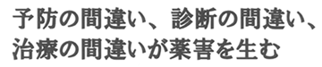
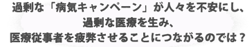
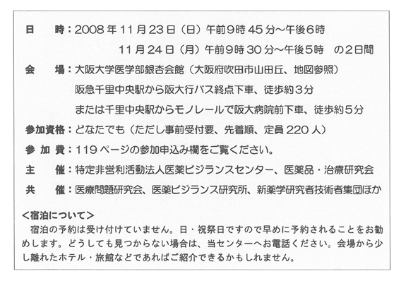
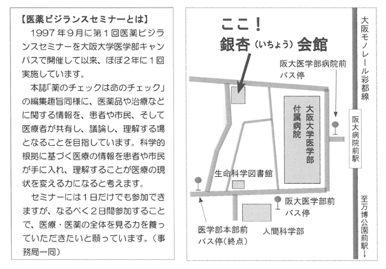
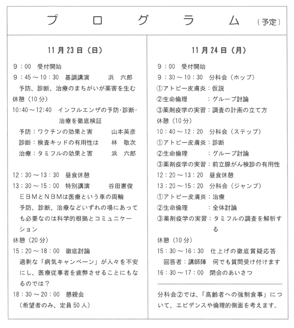

NPOJIPとは？
ことばの意味と設立目的
|
理事長紹介
|
事務局とスタッフ
|
活動記録
|
会員について
|
お知らせ
|
著作権・著作
速報版
書籍案内
薬のチェックは命のチェック
|
NPOJIP発行書籍
|
書評コーナー
薬の情報
解熱・鎮痛剤
|
ステロイド
|
抗がん剤・免疫抑制剤
|
抗うつ剤・安定剤・睡眠剤
|
その他
病気の情報
糖尿病
|
コレステロール・高脂血症
|
高血圧症
|
ぜん息・アレルギー
|
かぜ・インフルエンザ
|
その他
よくある質問
リンク
第６回 医薬ビジランスセミナーのご案内 （参加申込は
こちら
です）




